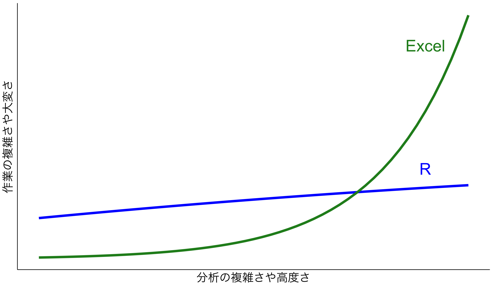
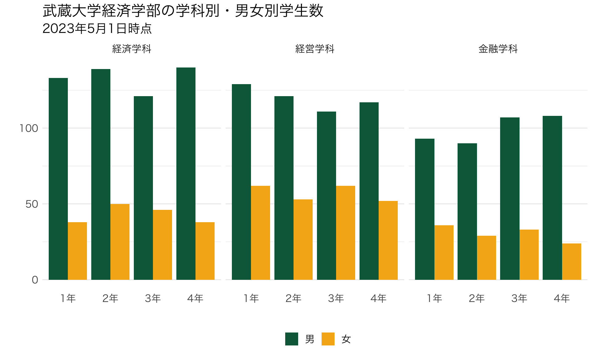

Chapter 2 Rとはなにか？
2.2 Excelじゃだめなのか
Excel は表計算ソフトで多くの機能を有している
Excelでできること
- 計算する
- 図を描く
- 基本的な統計分析
ではExcelではだめなのか？
- Excelでも最低限のことはできますが、分析が複雑になっていくと手数も増えていきます。
- 特に、Excelだと同じことをもう一度やる（データを変えて同じ分析をする、など）がやりにくく、ミスも起きやすくなります。
- 本当に初歩の初歩ならエクセルで十分ですが、ある程度の実証分析をやろうと思うとRなどを学ぶほうが回り道のようで結局早い

2.3 Rのよいところ
- 無料
- 多くにプラットフォーム（MacOS, Windows, Linux)で使用可能
- たくさんの資料がネット上に存在する
- 分析結果をプレゼンテーションするツールが充実している
- Rstudio: 統合開発環境(IDE)
- 豊富なパッケージ
- 多くのエンジニアや研究者が公開
2.4 例えばRでできること：図表
Rでは、柔軟に図表を描くことができます。例えば以下の図は、武蔵大学のウェブサイトに公開されている学生数のデータを描画したものです。少しやり方を学べば、以下のような図を簡単に作成することができます。


2.8 Rの欠点
- Rは進化が速い
- 処理が比較的遅い
- 一般的なデータ分析をするのには問題がない
- Excelよりは速い
- ビッグデータや複雑な統計モデルを走らせると、遅かったりメモリ消費が激しい
- CUIなので、最初の学習が難しい